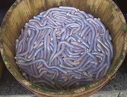

I knew you were just dying to see these lovely worms in clear aspic, so, here they are, with sauce and a condiment of shredded carrot and radish.
These burrowing worms are found in sandy subtidal environments and seabeds as deep as 3000 feet. As unsegmented worms, they have traditionally been placed in its own phylum, Sipuncula, but evidence is accumulating that they are a subgroup of the annelid (segmented) worms. This worm can grow to 10 inches long, but is more commonly around 6 inches.
These worms are used as food particularly in the Guangdong, Hainan, Guangxi, and Fujian provinces of southern China. They are cleaned of their innards and cooked in various ways. In Fujian province they are cut into 2 inch segments, embedded in small cakes of clear aspic jelly, and served with a sauce. Photo by SoHome Jacaranda Lilau distributed under license Creative Commons Attribution-ShareAlike v3.0 unported.
More on Annelid Worms.

A tub of live worms, ready for the kitchen.
Photo by Vmenkov distributed under license Creative Commons
Attribution-ShareAlike v3.0 unported.